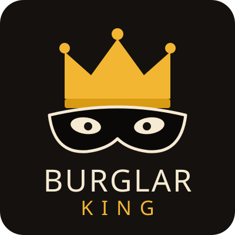
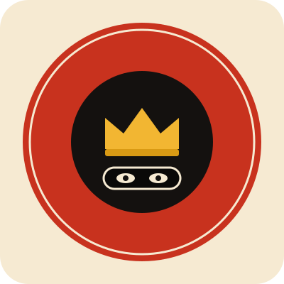
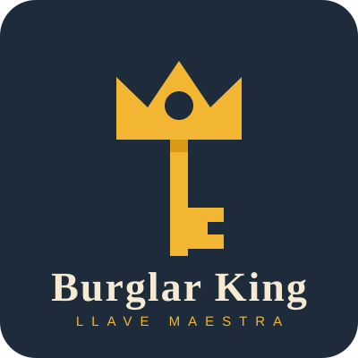
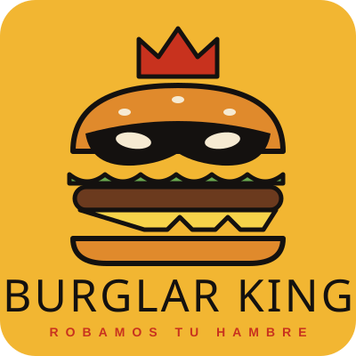
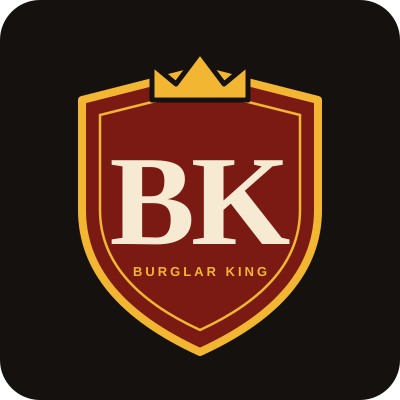
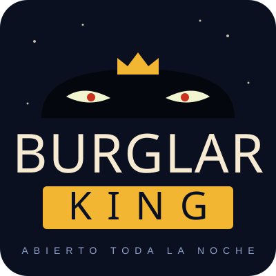
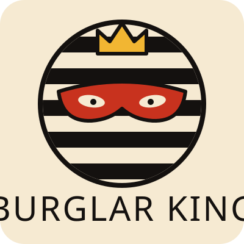
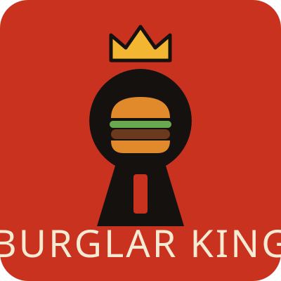
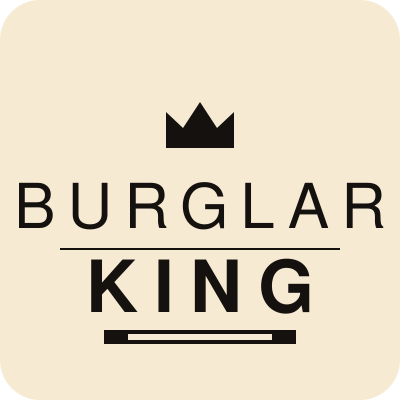
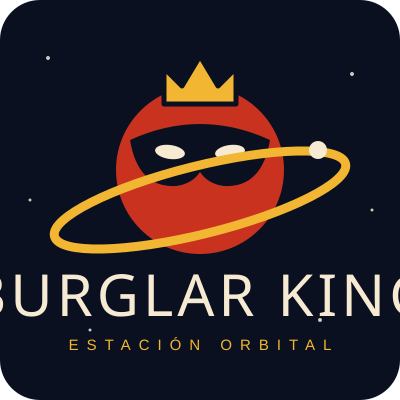

Burglar King
10 propuestas de logo, todas vectoriales (SVG) y originales.

01Antifaz y coronaCorona de oro sobre antifaz de ladrón.

02Sello circularInsignia redonda con texto en el aro.

03Llave-coronaLlave maestra con empuñadura de corona.

04Hamburguesa bandidaHamburguesa con antifaz y corona, la más cercana al producto.

05Escudo BKMonograma heráldico con antifaz.

06Ojos en la nocheSilueta con ojos brillantes sobre el nombre.

07Camiseta a rayasEl clásico ladrón de rayas, en emblema.

08CerraduraOjo de cerradura con la hamburguesa dentro.

09Minimalista tipográficoSolo letra y una corona; el más sobrio.

10Estación orbitalPlaneta con anillo, guiño a la estación espacial.